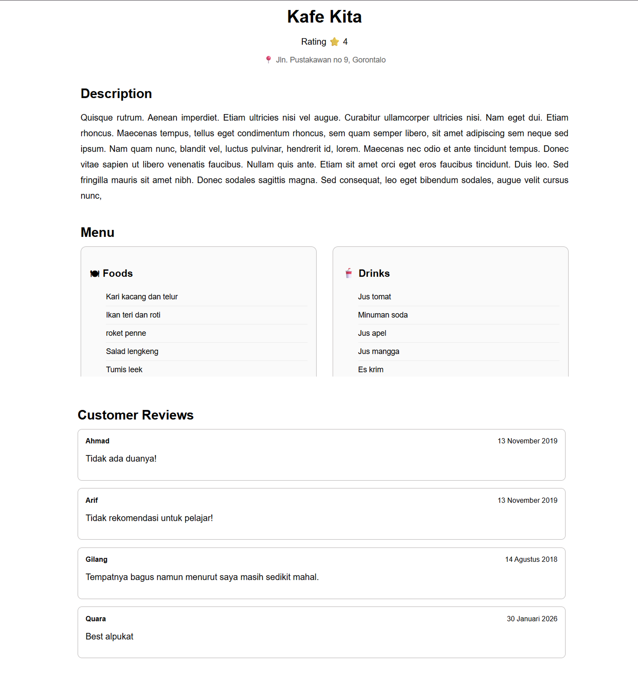

Restaurant Listing App
Front End Developer
React.js, JavaScript, HTML, CSS, Public API
Jan 2026
Project Description
Restaurant Listing App is a front-end web application developed as part of a technical test for a Front End Developer role. The project focuses on implementing a clean and functional user interface using React.js while integrating data from a public API.
The application allows users to browse restaurant data, apply multiple filters such as open status, price range, and cuisine categories, and view detailed restaurant information through a dedicated detail page. This project emphasizes component-based architecture, client-side filtering logic, and dynamic data rendering.
Restaurant Listing
Displays a list of restaurants fetched from a public API, including images, categories, ratings, price range, and open or closed status.

Restaurant Detail View
Provides detailed information about a selected restaurant, including ratings and user reviews, with clear navigation from the main listing.
Process
Requirement Analysis
I started by analyzing the technical test requirements, focusing on page structure, filtering behavior, API usage, and navigation flow between list and detail views.
Project Setup
The project was initialized using React.js with a structured folder organization to support reusable components and maintainable code.
API Integration
Public APIs were used to simulate restaurant data. The data was processed and mapped into UI components, ensuring consistent rendering and error handling.
Filtering & State Management
Client-side filtering was implemented for open status and price range, while category filtering was handled through API-based searching. State management ensured smooth UI updates.
Deployment
The application was deployed to Netlify, making it accessible online and ready for review, with the source code hosted on GitHub.